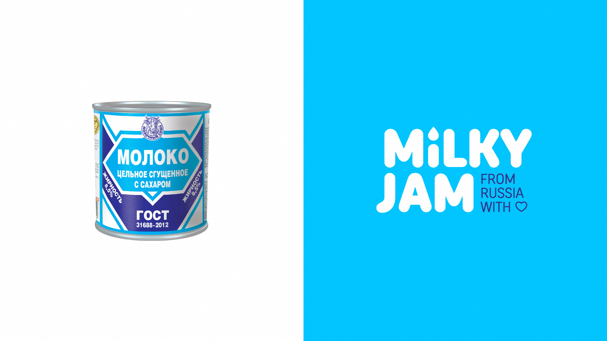
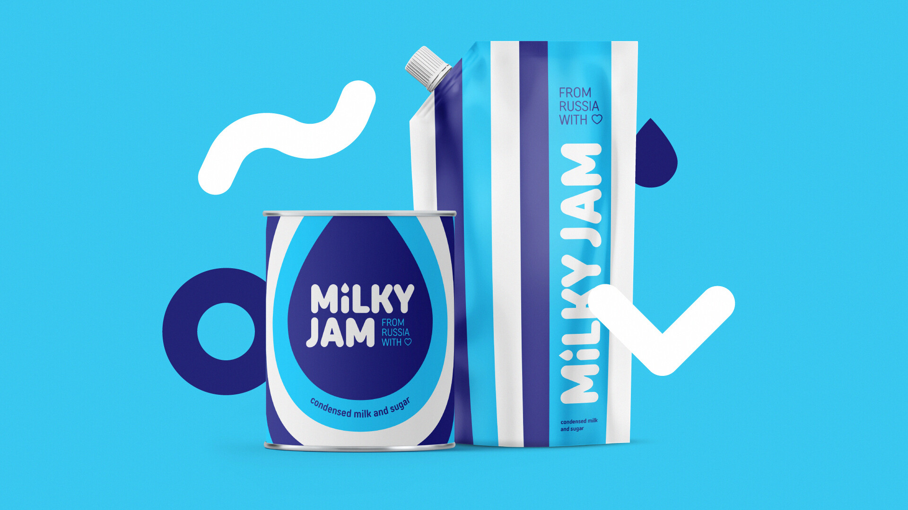
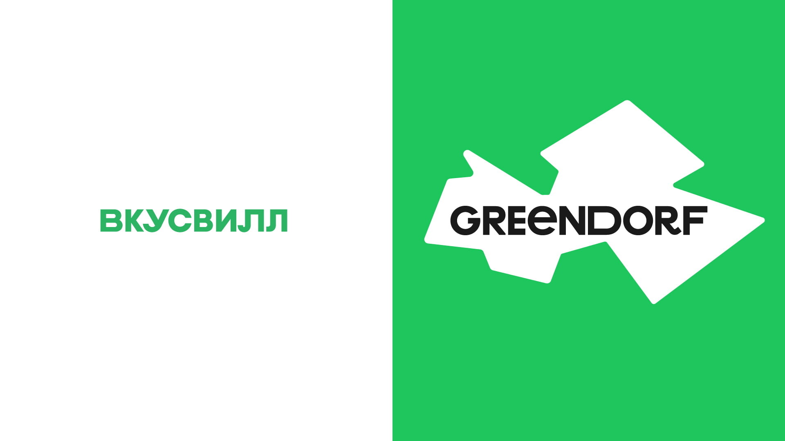
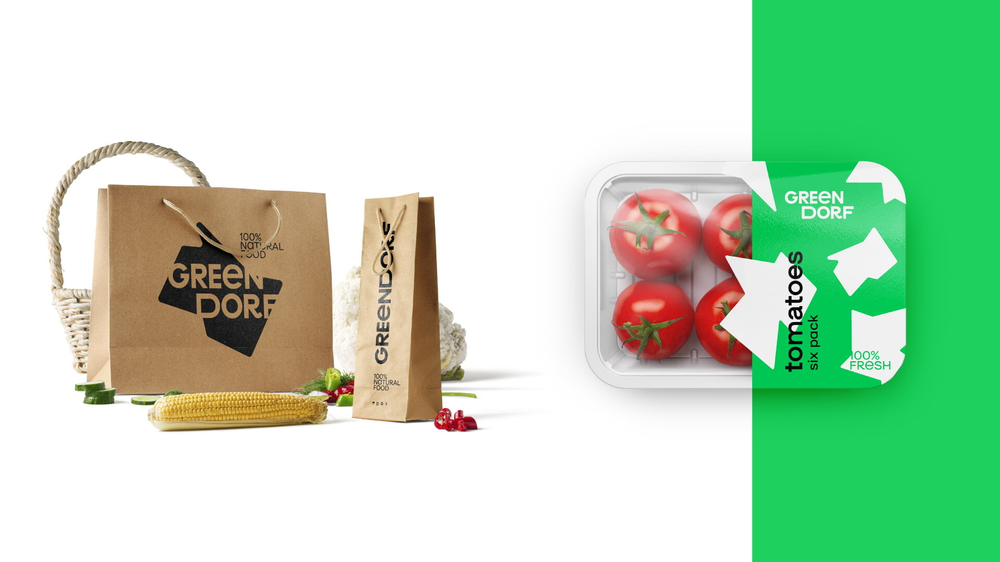
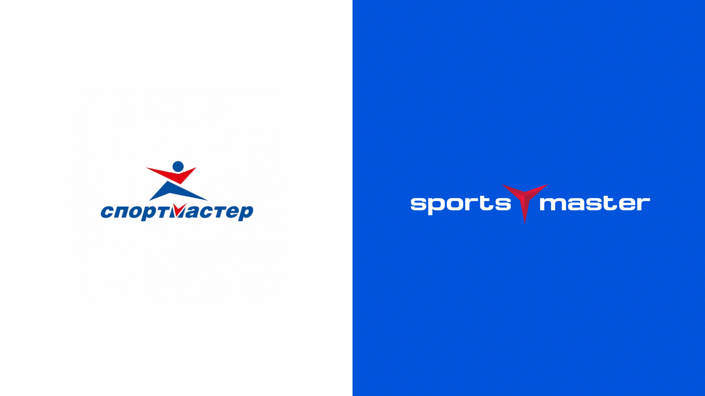
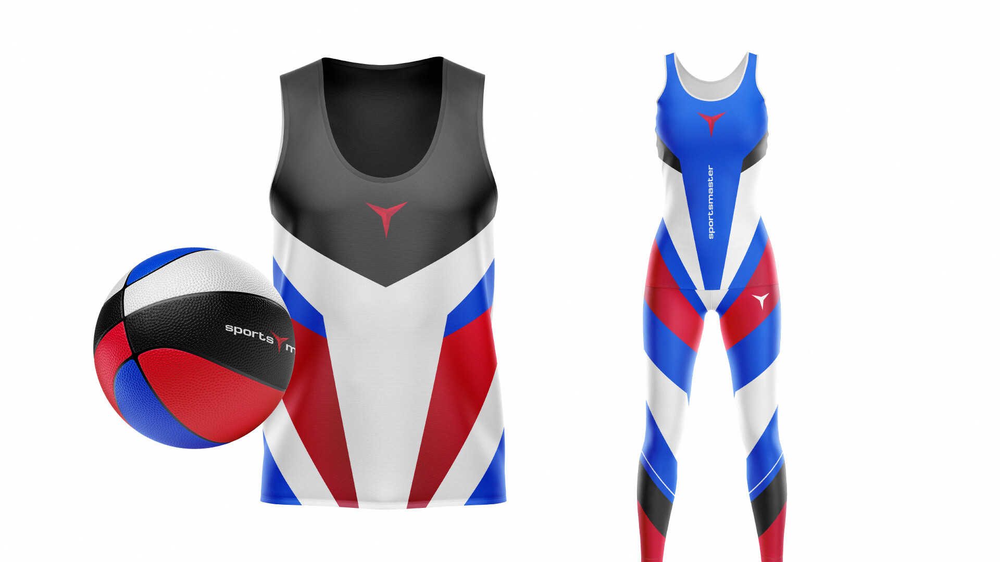
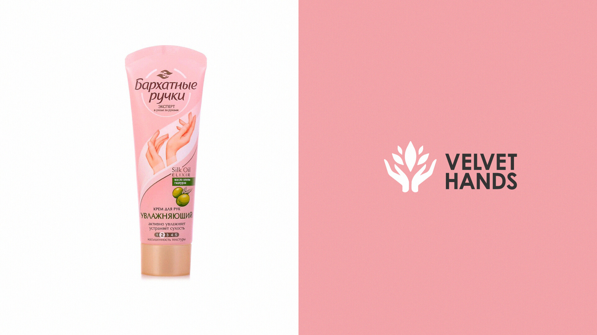
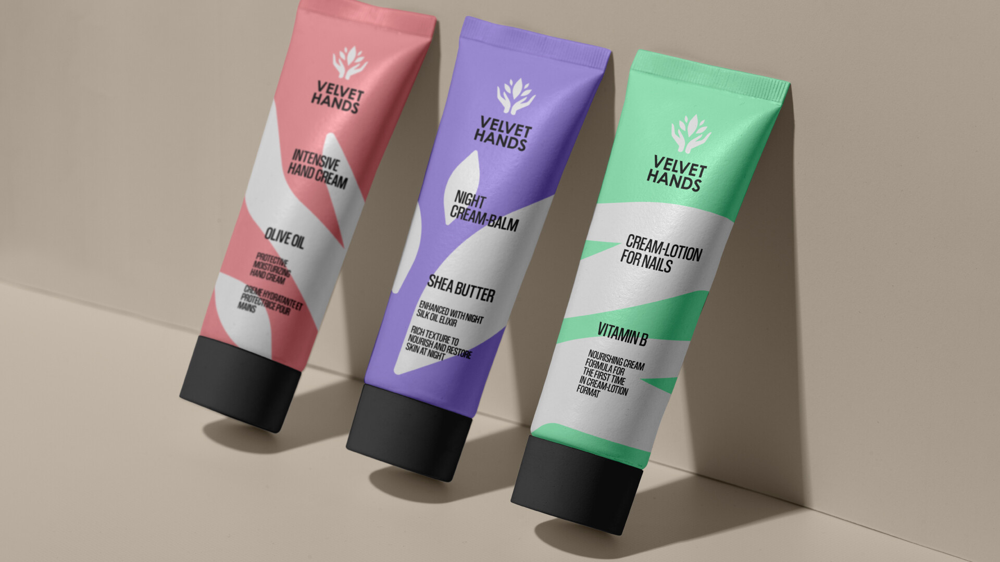
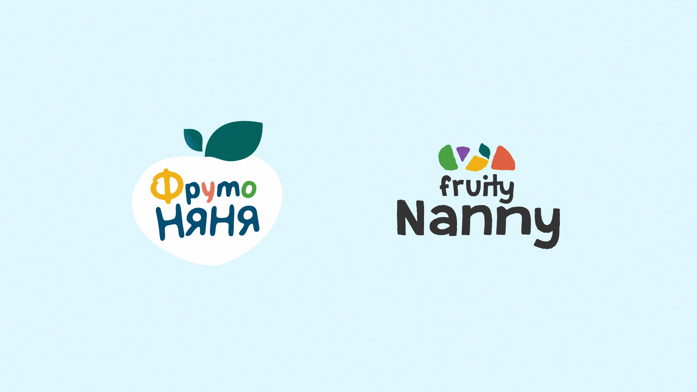
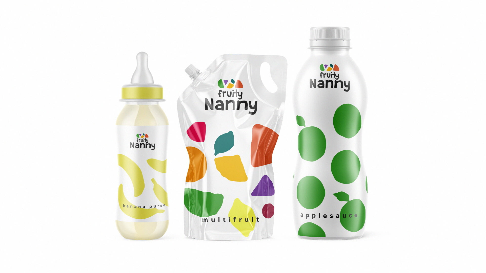

Всем привет! Это «То самое агентство». Мы недавно фантазировали, как могли бы выглядеть российские бренды на западном рынке. Сегодня по вашим запросам показываем продолжение — в том числе на примерах сгущёнки, «ВкусВилла» и «ФрутоНяни».
Хотя сгущёнка и была придумана в Англии, особой популярностью она пользуется в СНГ. Мы переосмыслили сгущённое молоко для западной аудитории: оно превратилось в «молочный джем» — Milky Jam. Российское происхождение продукта показали дескриптором, который переводится как «из России с любовью»
Узнаваемую цветовую палитру сохранили, а вот леттеринг подвергся изменениям. Шрифт стал более дружелюбным и плавным, благодаря чему дизайн упаковки потерял строгую геометричность и стал игривее.
В русском языке название «ВкусВилл» звучит двояко. В нём есть знакомый корень слова «вкусный», но так же и неизвестная часть «вилл» от английского village (деревня). Мы сохранили эту неоднозначность, совместив в названии английский и немецкий языки. Получилось название GreenDorf или «Зелёная деревня».
«ВкусВилл» уже пытался выйти на рынок Нидерландов, но безуспешно. Возможно, наш ребрендинг подошёл бы для этого лучше — в голландском языке есть схожее с немецком слово «dorp», которое тоже означает деревню. Это могло бы сделать компанию более понятной нидерландской аудитории.
Если присмотреться, то повторяющиеся буквы «В» и «Л» в логотипе «ВкусВилла» немного отличаются. Мы сохранили эту особенность оригинального шрифта в ребрендинге. Написание повторяющихся «Е» в новом логотипе разнится — одна из них строчная, а другая заглавная. В узорах на упаковке же угадываются силуэты деревень, где по легенде и производятся товары для магазина.
Мы оставили оригинальное название компании, лишь сделав его грамматически верным на английском языке. Получился Sportsmaster или «повелитель спорта».
Знак остался геометричным, но стал более строгим. Цветовую палитру разбавили чёрным цветом, чтобы не вызывать слишком сильные ассоциации с российским флагом.
Бренд косметики по уходу за кожей рук «Бархатные ручки» дословно перевели на английский как Velvet Hands. Получилось название, которое приятно звучит и формирует нужное позиционирование.
В знаке были сохранены силуэты рук. Бархат производят из хлопка — его и держат руки. Дизайн упаковки стал минималистичнее и строже.
Название «ФрутоНяня» перевели как Fruity Nanny — оно вызывает ассоциации с материнством и созвучно оригиналу. В знаковую часть поместили нарезанные кусочки фруктов, которые как будто нарисованы ребёнком.
В дизайне упаковки использовали много белого с вкраплениями цвета для экономии и экологичности.
